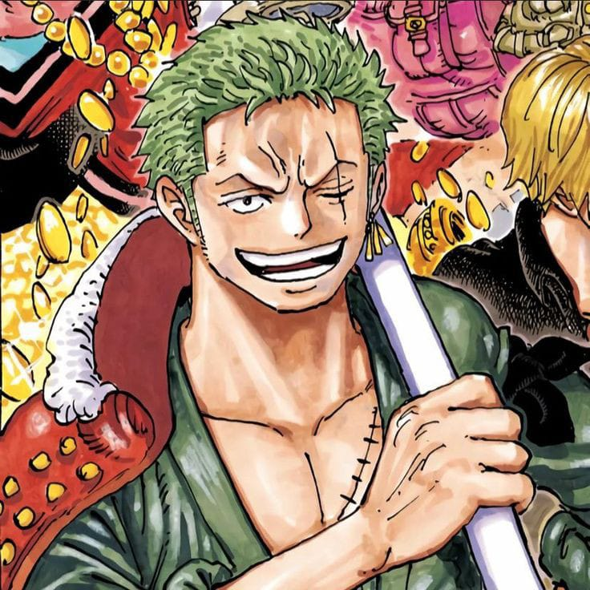

Monkey D. Luffy
O capitão da tripulação, Luffy possui a habilidade de esticar seu corpo como borracha, graças ao fruto do
diabo Gomu Gomu no Mi. Seu espírito indomável e seu sonho de se tornar o Rei dos Piratas o impulsionam a
enfrentar qualquer desafio.
Nami
A navegadora e cartógrafa da tripulação, Nami é um gênio das navegações e possui um profundo conhecimento
sobre meteorologia. Inicialmente, ela se junta ao grupo em busca de dinheiro para salvar sua vila, mas
depois se torna uma membro fiel da equipe.

Roronoa Zoro
O espadachim da equipe, Zoro é conhecido por sua habilidade em combate com três espadas (um estilo
chamado de Santoryu). Ele busca se tornar o maior espadachim do mundo e tem uma personalidade leal e
determinada.
Usopp
O atirador da tripulação e inventor, Usopp é um mentiroso inveterado com uma grande imaginação. Ele usa
suas habilidades com o atiramento e suas invenções para ajudar a equipe em suas aventuras.
Sanji
O cozinheiro e lutador da tripulação, Sanji é um mestre no combate com os pés e um chef talentoso. Ele
sonha em encontrar o All Blue, uma região do oceano onde todos os peixes se encontram, para criar pratos
inesquecíveis.
Tony Tony Chopper
O médico da tripulação, Chopper é uma rena que comeu o fruto do diabo Hito Hito no Mi, o que lhe permite
se transformar em diferentes formas. Ele busca ser um médico capaz de curar qualquer doença.
Nico Robin
A arqueóloga da equipe, Robin tem a habilidade de criar partes do corpo em qualquer superfície, graças ao
fruto do diabo Hana Hana no Mi. Ela busca desvendar os mistérios do mundo e encontrar o Rio Poneglyph.
Brook
O timoneiro da tripulação e um homem-peixe, Jinbe é um mestre em artes marciais e possui uma força e
resistência notáveis. Ele ajuda a tripulação com suas habilidades no mar e seu conhecimento sobre o
mundo dos homens-peixe.
Franky
O carpinteiro da tripulação, Franky é um ciborgue com habilidades mecânicas impressionantes e uma força
sobre-humana. Ele construiu o navio da tripulação, o Thousand Sunny, e busca se tornar o melhor
construtor de navios do mundo.